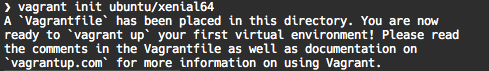

Ahora podemos crear una virtualización basada en la box descargada en el paso anterior. Para ello lo ideal es crear un directorio de trabajo y situarnos en él.
mkdir vagrant-iniciacion
cd vagrant-iniciacion
vagrant init ubuntu/xenial64
Esto nos producirá la siguiente salida por consola.
Nos están informando que se ha creado en esta carpeta es un archivo Vagrantfile, que es donde se deben especificar los detalles de la máquina virtual que se va a generar en nuestro espacio de trabajo. En el archivo Vagrantfile podemos especificar cosas como la cantidad de recursos de la máquina, su dirección IP, los puertos que tiene abiertos y un largo etc.